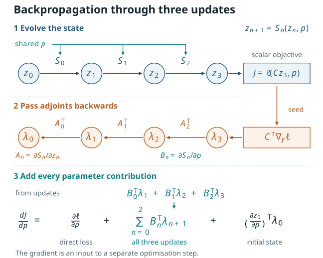

6.3.1. Backpropagation through a stepped update#
This algebraic recurrence makes the bookkeeping behind reverse-mode automatic differentiation visible. For a complementary visual introduction to reverse-mode differentiation in physics, see the Physics-Based Deep Learning discussion of differentiable physics. The worked example and diagram below were developed for this course.
{kind=link}

Figure 6.2 One parameter can influence a final loss at every update. Reverse mode passes a cotangent backwards and adds one parameter contribution per use of that parameter.#
6.3.1.1. Start from a sequence of update maps#
Let a state evolve through \(N\) discrete updates,
where the same parameter vector \(p\) may appear in every \(S_n\). A final field or state is observed by \(y=Cz_N\), and a scalar loss is formed as
Here \(C\) is assumed fixed with respect to \(p\). If an observation operator also depends on \(p\), its derivative belongs in the direct parameter dependence of the final observable/loss.
Define the local state and parameter derivatives
For a scalar loss, the terminal adjoint is the vector
and reverse accumulation is
The resulting total derivative is
This is \(dJ/dp\), the gradient of the final scalar observable/loss with respect to the input parameter \(p\). An optimisation algorithm uses that gradient in a separate choice such as
where the learning rate \(\alpha\) and any line search, regularisation, or constraint handling specify the optimisation method that uses the accumulated gradient.
If \(z_N\) is a field, \(\lambda_N\) has one entry per field degree of freedom.
For a scalar loss, the loss fixes the seed. For a vector-valued output, choose
a seed \(v\) to obtain a vector–Jacobian product \(A_n^\mathsf{T}v\). These
products can be evaluated directly as operator actions. This is why a scalar
loss.backward() can be economical even when the state is large.
6.3.1.2. A three-step scalar calculation that can be checked by hand#
Use the explicit recurrence
This scalar relaxation model isolates the shared-parameter sum: the parameter \(p\) appears at every step. For this scalar homogeneous relaxation, choosing \(p>0\) and \(0<\Delta t\,p<1\) makes \(0<1-\Delta t\,p<1\). This condition describes decay of the homogeneous part of this recurrence; a spatial time integrator requires its own stability analysis.
Take
Then \(A_n=\partial x_{n+1}/\partial x_n=1-\Delta t p=0.84\) and \(B_n=\partial x_{n+1}/\partial p=-\Delta t x_n\). The forward states and local parameter derivatives are:
step \(n\) |
\(x_n\) |
\(x_{n+1}\) |
\(B_n=-\Delta t x_n\) |
|---|---|---|---|
0 |
0.400000 |
0.636000 |
-0.0800000 |
1 |
0.636000 |
0.834240 |
-0.1272000 |
2 |
0.834240 |
1.000762 |
-0.1668480 |
The terminal seed is \(\lambda_3=x_3-y_\star=0.1007616\). Therefore
The corresponding reverse contributions are:
step \(n\) |
\(\lambda_{n+1}\) |
\(B_n\lambda_{n+1}\) |
|---|---|---|
0 |
0.07109738 |
-0.005687791 |
1 |
0.08463974 |
-0.010766175 |
2 |
0.10076160 |
-0.016811871 |
The displayed loss depends on \(p\) through the evolved state, and \(x_0\) is fixed. Its direct-loss and initial-state derivative terms are therefore zero. Adding the three entries in the last column gives
A parameter-dependent observation/loss or parameter-dependent initial state contributes through the first or last term of the total-derivative formula.
The accompanying script independently evaluates the same recurrence with PyTorch and a central finite difference. Its retained receipt records
The small finite-difference discrepancy arises from truncation and floating-point roundoff. Reproduce the calculation with:
python source/book/scripts/build_backprop_example.py
Run this command from the course directory. It updates the
figure under source/book/figures/ and writes a new validation receipt under
reviews/.
The machine-readable validation receipt retains the measured runtime, all forward/reverse values, and the analytic, automatic-differentiation, and central-difference assertions used here.
The comparison checks the derivative of the stated three-step scalar recurrence.
6.3.1.3. From a scalar recurrence to a spatial field#
The optional time-stepping companion notebook extends the same reasoning to a one-dimensional diffusion field. Predict a forward trajectory, differentiate its final observation, reproduce reverse mode with a visible loop, and compare the gradient with finite differences. Four exercises include worked answers.
Download the executable notebook and follow its CPU setup instructions. The example uses NumPy, Matplotlib and PyTorch to evolve a scalar diffusion field on a fixed grid, with synthetic observations generated in the notebook.
6.3.1.4. An AT2 subproblem with fixed history and mechanics#
The PhAST source defines an AT2 damage weak form and an
adjoint CG backward for selected damage-solve inputs in
vendor/PhAST/src/phast/solvers/damage_solver.py. For an unconstrained
interior solve (or a residual restricted to free damage degrees of freedom),
with spatially constant \(G_c\) and the mesh-dependent \(\gamma\) correction omitted, a
useful fixed-history, fixed-mechanics reduced notation for that damage
subproblem is
where \(M\) and \(K\) are mass and stiffness assemblies, while \(M_H\) and \(b_H\) collect the history-weighted assembly. With \(H\), mechanics, and \(\ell\) held fixed, let
Implicit differentiation of this reduced residual gives
The direct term accounts for any explicit dependence of the chosen loss on \(G_c\). The minus sign follows from differentiating \(R_d=0\) and solving for \(dd/dG_c\).
In a full load history, mechanics can change \(H\); an irreversibility update may use a non-smooth maximum; damage bounds can activate; and nonlinear/staggered iterations and stopping criteria matter. Active-set changes, history changes, and convergence failures must be accounted for by the selected differentiation rule. Differentiability at a discrete model change depends on that rule and the local behaviour of the state.
6.3.1.5. Check your understanding#
In the scalar example, how do the three \(B_n\lambda_{n+1}\) terms account for the repeated use of the scalar parameter \(p\)?
Suppose the initial state depends on the parameter through \(x_0=x_0(p)\). Which term in the total derivative changes, and why does it use \(\lambda_0\) after propagation from the terminal seed \(\lambda_3\)?
Which assumptions must remain fixed before the displayed AT2 \(G_c\) identity can be treated as a reduced-subproblem calculation?
Short answers
The single parameter is used once in each of the three update maps. Each local use affects the final loss through the remaining steps, so reverse mode adds one local parameter contribution for each use.
The initial-state term \((\partial z_0/\partial p)^\mathsf{T}\lambda_0\) becomes nonzero. The adjoint at step zero contains the sensitivity of the final loss to a perturbation of the initial state after every later update has been traversed backwards.
The mechanics-dependent history field \(H\), the mechanics state, and \(\ell\) are held fixed. A total derivative through a fracture load path additionally requires the dependencies of history maxima, bounds/active sets, and the converged staggered states.